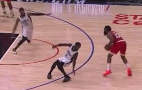
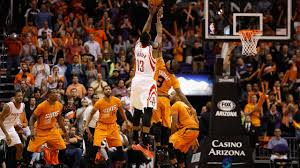
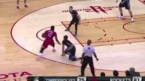
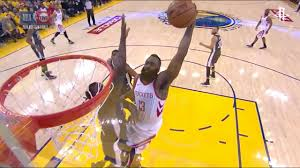
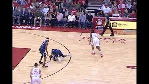
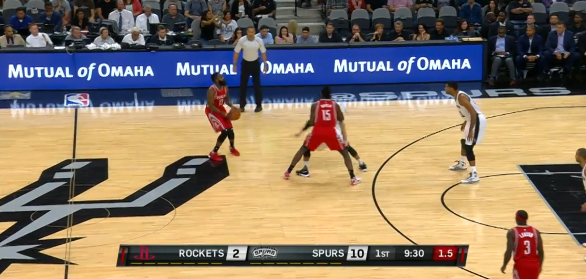

Top 1
Game Winner vs Warriors
Harden hit a heavily contested three to complete one of the most iconic game-winning shots of his career.
Watch Clip Opens in YouTube in a new tab.Scoring
This page highlights ten of James Harden's most memorable scoring moments, from iconic game-winners to signature step-back threes, powerful finishes at the rim, and plays that defined his offensive style.
Each clip opens on YouTube in a new tab so viewers can watch the original highlight directly and revisit some of the most unforgettable scoring plays from across his career.
Harden hit a heavily contested three to complete one of the most iconic game-winning shots of his career.
Watch Clip Opens in YouTube in a new tab.Harden froze his defender, created space, and calmly buried one of the coldest step-back threes ever.
Watch Clip Opens in YouTube in a new tab.Harden created just enough separation and delivered a late clutch basket in a high-pressure playoff moment.
Watch Clip Opens in YouTube in a new tab.After keeping his team alive earlier in the possession, Harden finished the play with a huge step-back winner.
Watch Clip Opens in YouTube in a new tab.
With defenders flying at him, Harden still converted the shot and drew the foul for a dramatic four-point play.
Watch Clip Opens in YouTube in a new tab.
Harden calmly rose up and hit a cold-blooded jumper in the closing seconds to steal the game.
Watch Clip Opens in YouTube in a new tab.
With just a few dribbles, Harden created separation and launched one of his signature isolation threes.
Watch Clip Opens in YouTube in a new tab.
Harden attacked the lane aggressively and finished over the defense for one of the strongest dunks of his career.
Watch Clip Opens in YouTube in a new tab.
Harden shook the defender off balance, created space, and knocked down a clean step-back three.
Watch Clip Opens in YouTube in a new tab.
Harden pulled up from deep range and showed the fearless scoring confidence that defined his offensive game.
Watch Clip Opens in YouTube in a new tab.